Carmen Messages
In all messages, the distance units are in metres. Angle measurements in radians, in the range 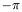 to 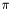 . Velocity units are m/sec. The timestamp is given as the number of seconds since the unix epoch, and is a double, where the fractional part is computed from the tv_usec field of the timeval struct returned by gettimeofday. More information on units and co-ordinate frames can be found in the Carmen Programming Style Guide.
Sensor data currently comes from one of two sources: the base module (such as scout, pioneer, etc.) provides raw odometry data and may provide sonar data, bumper data and infra-red (IR) data. The laser module may provide laser data.
All of the following messages can be subscribed to by using helper functions in the appropriate xxx_interface library, e.g., base_interface. The helper functions are all of the form:
void carmen_robot_subscribe_xxxx_message(carmen_robot_xxx_message *msg,
carmen_handler_t handler,
carmen_subscribe_t subscribe_how);
where carmen_handler_t and carmen_subscribe_t are defined as
typedef enum {CARMEN_UNSUBSCRIBE, CARMEN_SUBSCRIBE_LATEST,
CARMEN_SUBSCRIBE_ALL} carmen_subscribe_t;
typedef void (*carmen_handler_t)(void *);
If the msg field of the subscribe function is NULL, then a static message is automatically allocated and returned as the argument to handler, otherwise the message pointer passed to the subscribe function is always used. In all cases, the same memory is re-used for all handled messages of the same message name, and passed as an argument to the handler function.
If the handler field of the subscribe function is NULL, no handler is called, but the memory pointed to by msg is updated regularly. If both handler and msg are both NULL, your program will spend a fair chunk of time doing nothing useful for you.
The subscribe_how field allows the user to either unsubscribe, or to start a new subscription. Subscribing only to the latest message allows the module to fall behind in processing messages without serious consequences. It should be pointed out that subscribing to all messages (CARMEN_SUBSCRIBE_ALL) does not guarantee all messages. Currently, the upper limit for the queue size is 1000 messages. If an IPC process actually subscribes to {all} messages and falls seriously behind (or wedges), central can run out of memory, or even worse, the TCP stack can overflow. Consequently, the Carmen subscription functions limit the maximum message queue size to 1000. A resourceful programmer can increase this queue (or even remove the queue size), but it is not clear this would ever be necessary.
Some of these messages can also be obtained using explicit queries. To date, the only robot data that can be obtained using queries are from localize and navigator. Specifically, carmen_localize_globalpos_message, carmen_localize_particle_message, carmen_navigator_status_message and carmen_navigator_plan_message can all be obtained using specific query interface functions, which return the appropriate messages directly.
These functions create new memory every time they return successfully; consequently, they should be used with care.
The timestamp field in all messages is defined to be the time when the data was first created or acquired (e.g, by scout or simulator).
void carmen_base_subscribe_odometry_message(carmen_base_odometry_message *odometry,
carmen_handler_t handler,
carmen_subscribe_t subscribe_how);
The x, y, theta fields are the raw odometry, from the time the robot was turned on. The tv and rv fields are the translational and rotational velocities of the robot. For robots that have differential drive (as opposed to synchrodrive), these velocities are computed from the left and right wheel velocities that base actual uses.
Sonar sensing is not properly supported by Carmen right now, and so subscribing to carmen_base_sonar_message messages may sometimes not work properly. But, if you care, it looks like:
void carmen_base_subscribe_sonar_message(carmen_base_sonar_message *sonar,
carmen_handler_t handler,
carmen_subscribe_t subscribe_how);
The sonar message reports a recent set of sonar range data from the base. There should be as many range points and offset points as described by num_sonars. The sonar_offsets describes the physical location and orientation of each transducer from the centre of the robot.
There is currently no way to query the firing rate or order of the sonar transducers, and the sonar message is not yet supported. (Or even defined by any module.)
\subsubsection lmessages_laser Laser data
Laser data is defined as a set of ranges, of number given by the num_readings field, contained in range. The number of ranges is almost always 180, since we only support SICK lasers in increments at the moment. Each range measurement is the distance to the nearest obstacle along some heading. The first range is along the 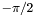 direction (of course, in the robot's local frame of reference, where is directly ahead) and the last range is along the 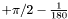 heading. In degrees, that is from 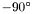 to 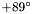 . The increment is currently . The order is right-handed (counter-clockwise). Remember that this is all with reference to a laser that is mounted facing the front of the robot, with the laser right way up (the serial and power connectors are on top). For rear laser messages, the measurements go from 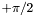 through to 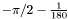 . If you mount the laser upside down, the measurements go from through 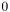 to . For forward pointing lasers, you can pretty much assume the laser is mounted the right way up.
The timestamp field in all messages is defined to be the time when the data was first created or acquired (e.g, by laser or simulator), not the timestamp of some intermediate process (such as the correction applied by robot when applying odometry interpolation and correction). Similarly, the hostfield is defined to be the hostname associated with the origin of the data, not the hostname of some intermediary converting the data from raw form to interpolated form.
void carmen_laser_subscribe_frontlaser_message(carmen_laser_laser_message *laser,
carmen_handler_t handler,
carmen_subscribe_t subscribe_how);
void carmen_laser_subscribe_rearlaser_message(carmen_laser_laser_message *laser,
carmen_handler_t handler,
carmen_subscribe_t subscribe_how);
This message is defined by laser and by simulator, and the same message struct is used by both carmen_laser_frontlaser and carmen_laser_rearlaser messages. As a consequence, there is no way to tell from a message itself whether or not the message is a front laser message or a rear laser message. This hopefully will be fixed in a future release.
These messages are defined and emitted by robot.
carmen_robot_laser_message
void carmen_robot_subscribe_frontlaser_message(carmen_robot_laser_message *laser,
carmen_handler_t handler,
carmen_subscribe_t subscribe_how);
void carmen_robot_subscribe_rearlaser_message(carmen_robot_laser_message *laser,
carmen_handler_t handler,
carmen_subscribe_t subscribe_how);
The carmen_robot_laser_message has raw odometry attached to it. The robot module attempts to adjust for clock skews and interpolate the true robot position of the data correctly based on time stamps. Consequently, after a carmen_laser_laser_message is received, the corresponding carmen_robot_laser_message will not be emitted until a carmen_base_odometry_message with a later timestamp is received. The odometry fields are x, y and theta. These fields are in fact the interpolated position of {this laser}, based on the laser offset parameters for this laser. The interpolated odometry for the robot itself are the odom_x, odom_y and odom_theta fields. Consequently, front and rear laser messages with the same timestamps should have different values for their x, y and theta fields, but identical values for their odom_x, odom_y and odom_theta fields.
The robot module is also used to perform collision avoidance, stopping the robot if the laser measurements indicate an obstacle inside safety margins. The tooclose array labels each range measurement as to whether or not it lies inside the robot safety margins. There are as many tooclose elements as there are range elements (as given by the num_readings field). If msg.tooclose[i] is 1, then the range msg.range[i] is inside the safety margin.
The same message struct is used by both the carmen_robot_frontlaser and carmen_robot_rearlaser messages. Again, there is no way to tell from a message itself whether or not the message is a front laser message or a rear laser message. This hopefully will be fixed in a future release.
carmen_localize_globalpos_message
void carmen_localize_subscribe_globalpos_message(carmen_localize_globalpos_message *globalpos,
carmen_handler_t handler,
carmen_subscribe_t subscribe_how);
This message reports on the current robot pose estimate, given by localize.
The globalpos field is mean robot position (computed from the particle filter), and is given in the global frame of reference. (See the Carmen Style Guide.) The odometrypos is the odometry of the robot at the time the current estimate was computed. It is therefore possible to estimate the true position of the robot for a short duration after the last carmen_localize_globalpos_message by finding the relative displacement (translational and rotational) of the robot between the current odometry, and the odometry of the last carmen_localize_globalpos_message, and then adding this displacement to the globalpos field. There is a helper function in liblocalize_interface called carmen_localize_correct_odometry that does exactly this.
Notice that Carmen localize no longer explicitly provides correction parameters, but instead provides a functional way to correct odometry.
The globalpos_std gives the variances of the position estimates, 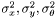 . The globalpos_xy_cov field gives the covariance 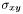 .
The converged field indicates whether localize is currently in global or tracking mode. If localize has converged (is in tracking mode) then the position estimate has high confidence. When localize believes it is lost, it switches back to global localization mode and the converged field switches to 1.
Additional messages about the state of localize are:
carmen_localize_sensor_message -- This message contains information about how localize has used each laser reading, such as whether a laser readings was integrated (or not), and which person filter the reading was assigned (if any).
carmen_localize_people_message -- This message contains the current state of the person tracker, if it is running.
carmen_navigator_plan_message
void carmen_navigator_subscribe_status_message(carmen_navigator_status_message *status,
carmen_handler_t handler,
carmen_subscribe_t subscribe_how);
int carmen_navigator_query_status(carmen_navigator_status_message **status);
The autonomous field is 1 if the robot is currently trying to autonomously navigate to the goal, perhaps because a user clicked the Autonomous button in the navigator display. When the robot changes to non-autonomous mode, a carmen_navigator_autonomous_stopped_message is emitted (see below), and contains the reason for changing to non-autonomous mode.
The goal_set field is 1 if the navigator has received any goal at all. If no goal has been set, then it is not possible for the navigator go into autonomous mode.
The goal field reports on what the navigator's current goal. The navigator does not (and should not ever) support multiple goal destinations.
The robot field is the navigator's estimate of the current robot position in the global reference frame (see the Carmen Style Guide). This is based on the latest estimate from localize, combined with any subsequent odometric updates the navigator has received. The robot position field reported by the navigator should never lag behind (in time) localize's estimate.
void carmen_navigator_subscribe_plan_message(carmen_navigator_plan_message *plan,
carmen_handler_t handler,
carmen_subscribe_t subscribe_how);
int carmen_navigator_query_plan(carmen_navigator_plan_message **plan);
If the path length is 0, then there is no path from the current robot location to the goal. The first point in the path should always be the robot's current position as reported by the carmen_navigator_status_message, and the last point in the path should always be the goal as reported by carmen_navigator_status_message.
void carmen_navigator_subscribe_autonomous_stopped_message
(carmen_navigator_autonomous_stopped_message *autonomous_stopped,
carmen_handler_t handler,
carmen_subscribe_t subscribe_how);
The reason field can take one of three values:
CARMEN_NAVIGATOR_GOAL_REACHED_v -- This means that the robot has reached the goal destination (that is, is within the robot_approach_dist of the goal).
CARMEN_NAVIGATOR_USER_STOPPED_v -- This means that some other process (such as the navigator) published a carmen_navigator_stop_message. CARMEN_NAVIGATOR_UNKNOWN_v -- This means some (unknown) reason caused autonomous navigation to stop. The navigator does not currently ever emit this reason.
While it is (obviously) possible to send messages directly to the base module, this is not an exposed interface. Sending velocities directly to the base side-steps the last-mile collision avoidance module, and can also result in all kinds of pathologies as modules fight for control of the robot.
carmen_robot_velocity_message
void carmen_robot_velocity_command(double tv, double rv);
Publishing this message will tell the robot module to make the robot go at the specified translation velocity tv specified rotational velocity rv.
The robot may not be able to go at these speeds, because either they exceed the maximum velocity, or because an obstacle is too close. There is no diagnostic for the first condition yet. The second condition can be detected by examining the tooclose field of the carmen_robot_laser_message.
void carmen_robot_velocity_command(double distance, double theta);
Publishing this message will take advantage of a PD loop in the robot module to make the robot go to specific target point. This control loop contains no planning, so if an obstacle intervenes between the robot and the target, the robot will stop.
The target point set by this message is given by the distance and theta fields, which are in metres and radians respectively, and are {relative} to the robot's current pose. Consequently, a positive distance with a theta of 0 would drive the robot forward distance metres. Similarly, a distance of 0 and a theta of would cause the robot to rotate  , regardless of current orientation.
, regardless of current orientation.
This message provides a way to initialize localization.
typedef struct {
int distribution;
carmen_point_t mean, std;
double timestamp;
char* host;
} carmen_localize_initialize_message;
The distribution specifies the kind of distribution to use for initialization. At the moment only one type of distribution is supported: CARMEN_INITIALIZE_GAUSSIAN. (The localize_messages.h file also lists a CARMEN_INITIALIZE_UNIFORM distribution type, but this is not currently supported by localize itself.)
The 3-dimensional point mean specifies the 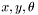 mean of the gaussian, and std specified the 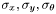 standard deviations of the gaussian. Reasonable values for the standard deviations are 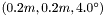 .
It is also possible to initialize localize through the navigator by using the carmen_navigator_set_robot or carmen_navigator_set_robot_map messages, but these messages are deprecated.
This message provides a way to set the goal or destination for navigation. It is not possible (nor should it ever be possible) to set multiple goals inside the navigator.
typedef struct {
double x, y;
double timestamp;
char* host;
} carmen_navigator_set_goal_message;
int carmen_navigator_set_goal(double x, double y);
typedef struct {
char *placename;
double timestamp;
char* host;
} carmen_navigator_placename_message;
int carmen_navigator_set_goal_place(char *name);
The 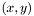 fields should be self-explanatory as the goal position, in the global reference frame (see the Carmen Style Guide), as always in metres.
If the map contains place names, then it is also possible to set the goal position using a carmen_navigator_placename_message, and the carmen_navigator_set_goal_place helper function. This has no effect if the map does not contain a place name that matches.
These messages toggle the navigator in and out of autonomous motion.
typedef struct {
double timestamp;
char* host;
} carmen_navigator_go_message;
typedef struct {
double timestamp;
char* host;
} carmen_navigator_stop_message;
int carmen_navigator_stop(void);
int carmen_navigator_go(void);
If the robot is already at the current goal position, then the carmen_navigator_go_command will cause the navigator to change momentarily into autonomous mode, and then switch back again, emitting a carmen_navigator_autonomous_stopped_message with CARMEN_NAVIGATOR_GOAL_REACHED_v as the reason.
When the navigator receives a carmen_navigator_stop_message, then a carmen_navigator_autonomous_stopped_message is emitted with CARMEN_NAVIGATOR_USER_STOPPED_v as the reason.
Parameters can be acquired from the parameter server using functions in libparam_interface, eg:
int carmen_param_get_int(char *variable, int *return_value);
int carmen_param_get_double(char *variable, double *return_value);
int carmen_param_get_onoff(char *variable, int *return_value);
int carmen_param_get_string(char *variable, char **return_value);
The conversion of parameters to ints, doubles, etc. is done on demanded by the interface library. If you do not wish the library to convert the parameter to the appropriate type, simply request the parameter as a string.
If there is no definition for the parameter requested, then the library will output a warning to the terminal, unless this warning has been turned off using carmen_param_allow_unfound_variables(1);.
Also, as a convience, variables can be requested either by specifying the fully qualified module_param-name name, or by first specifying a module using carmen_param_set_module(char *), and the specifying just the param-name form.
Some processes may wish to subscribe to changes to parameters during their execution, for example changing the robot speed or acceleration profile, or changing the robotgraph display parameters. Of course, some processes should not suscribe to some parameter changes: changing the number of particles localize uses during execution would result in disaster.
Parameter changes can be subscribed using the functions below:
void carmen_param_subscribe_int(char *module, char *variable, int *variable_address,
carmen_param_change_handler_t handler);
void carmen_param_subscribe_double(char *module, char *variable, double *variable_address,
carmen_param_change_handler_t handler);
void carmen_param_subscribe_onoff(char *module, char *variable, int *variable_address,
carmen_param_change_handler_t handler);
void carmen_param_subscribe_string(char *module, char *variable, char **variable_address,
carmen_param_change_handler_t handler);
These functions take a module and variable name as parameters. The subscription mechanism can either silently change variable values as parameters change, or can invoke a callback when a parameter is changed. If the variable_address parameter is non-NULL, then the new parameter value is stored at this address (in the case of strings, this is a pointer to some newly-malloc'd memory containing the new string definition. If the variable address is non-NULL when the parameter changes, the old memory is freed.) If the handler parameter is non-NULL, then function pointed to by handler is invoked whenever the parameter changes. If both are non-NULL, then the variable changes and then the callback invoked. If both are NULL, then the subscription mechanism does not do much.
Parameters can be loaded in a single step using the parameter factory methods, much like the gtk menu item factory methods. The set of parameters to be loaded should be described in an array of carmen_param_t, and passed to void carmen_param_install_params(int argc, char *argv[], carmen_param_p param_list,
int num_items);
Each parameter in the array of type carmen_param_t has the form:
typedef struct {
char *module;
char *variable;
carmen_param_type_t type;
void *user_variable;
int subscribe;
carmen_param_change_handler_t handler;
} carmen_param_t;
module is the module name, variable is the variable name, type is one of CARMEN_PARAM_INT, CARMEN_PARAM_DOUBLE, CARMEN_PARAM_ONOFF or CARMEN_PARAM_STRING. The parameter is loaded into user_variable, whose original type should match that specified in the type field.
If subscribe is set to 1, then the process will subscribe to changes to the parameter, and set up a callback on the function specified in handler (if not NULL). The callback parameter is ignored if subscribe is set to 0, and the parameter is only loaded once. There is no way to use the parameter factory methods, subscribe to a variable and not have the variable's value updated automatically.
If carmen_param_allow_unfound_variables() is set to 0 (by default), then carmen_param_install_params will exit with an error on the first parameter absent from the parameter server, reporting what the problematic parameter is.
If a process loads its parameter set using the parameter factory methods, then running the process with the -h or -help command line option will print out a list of parameters used by that process, their expected types and whether or not the process subscribes to changes.
Generated on Wed Apr 5 18:34:20 2006 for CARMEN by
 1.4.4
1.4.4